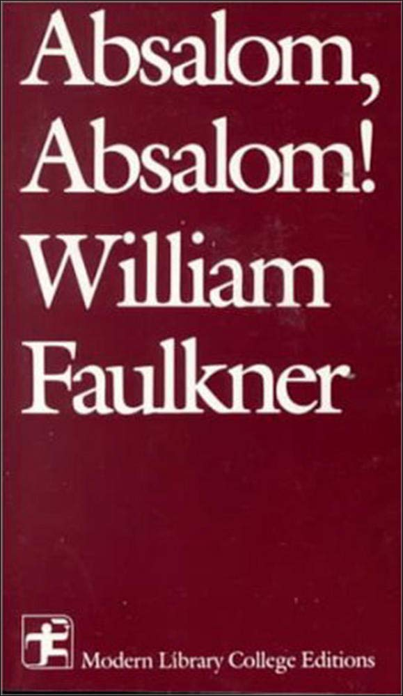
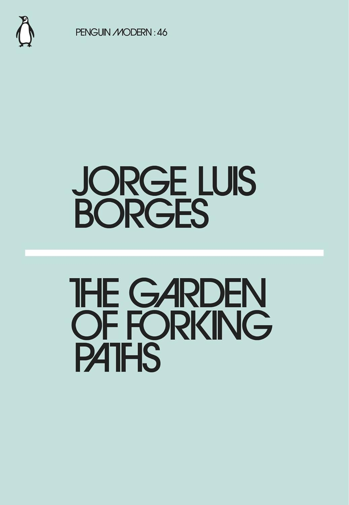
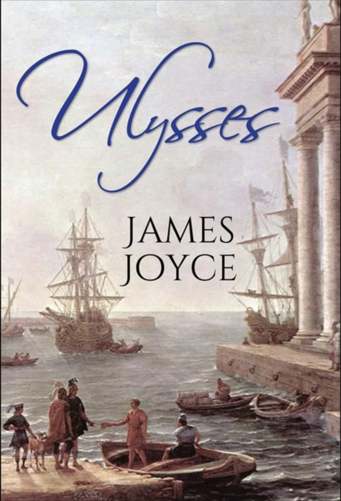

Absalom, Absalom!
"Absalom, Absalom!" is one of William Faulkner's most important works, and it is also his most complex, profound, and epic. The novel recounts the intense disintegration of a family in the American South from around 1860 to 1910, deeply portraying various conflicts between people, and within themselves, touching on many universally relevant issues concerning the human condition. The narrative technique of the novel is unique; characters in the book "explain" the past from different perspectives, each infused with their own subjective emotions, yet collectively reflecting the tragic tone of the entire work. The title of the book originates from a Biblical reference, and the novel features themes of love and hatred between parents and children, as well as ambiguous feelings between siblings, reminiscent of Biblical stories.
The Garden of Forking Paths
This book is a collection of short stories from 1941, containing seven stories. Among them, "The Garden of Forking Paths" is a detective story that describes the preparation and execution of a crime. The Garden of Forking Paths is a riddle, or rather, a parable, and the solution to the riddle is time.
A Selection of Latin American Prose Poetry

Since the mid-nineteenth century, with the renewal of poetic concepts, poets have explored new domains in the content of poetry and conducted various experiments in the forms and techniques of expression. The emergence of modern free verse and modern prose poetry marks the arrival of a new era in the history of poetry.
Ulysses
Since the mid-nineteenth century, with the renewal of poetic concepts, poets have explored new domains in the content of poetry and conducted various experiments in the forms and techniques of expression. The emergence of modern free verse and modern prose poetry marks the arrival of a new era in the history of poetry.